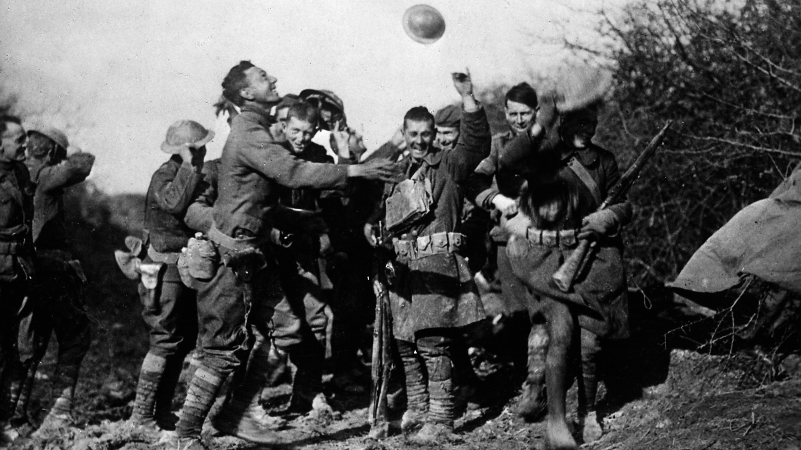

The Big Picture

World War I or the First World War, often abbreviated as WWI or WW1, was a global war originating in Europe that lasted from 28 July 1914 to 11 November 1918. Also known as the Great War or "the war to end all wars",[7] it led to the mobilisation of more than 70 million military personnel, including 60 million Europeans, making it one of the largest wars in history.[8][9] It also was one of the deadliest conflicts in history,[10] with an estimated 8.5 million combatant deaths and 13 million civilian deaths as a direct result of the war,[11] while resulting genocides and the related 1918 Spanish flu pandemic caused another 17–100 million deaths worldwide,[12][13] including an estimated 2.64 million Spanish flu deaths in Europe and as many as 675,000 in the United States.
On 28 June 1914, Gavrilo Princip, a Bosnian Serb Yugoslav nationalist and member of the Serbian Black Hand military society, assassinated the Austro-Hungarian heir Archduke Franz Ferdinand in Sarajevo, leading to the July Crisis.[15][16] In response, Austria-Hungary issued an ultimatum to Serbia on 23 July. Serbia's reply failed to satisfy the Austrians, and the two moved to a war footing. A network of interlocking alliances enlarged the crisis from a bilateral issue in the Balkans to one involving most of Europe. By July 1914, the great powers of Europe were divided into two coalitions: the Triple Entente, consisting of France, Russia, and Britain; and the Triple Alliance of Germany, Austria-Hungary, and Italy. The Triple Alliance was only defensive in nature, allowing Italy to stay out of the war until 26 April 1915, when it joined the Allied Powers after its relations with Austria-Hungary deteriorated.[17] Russia felt it necessary to back Serbia, and approved partial mobilisation after Austria-Hungary shelled the Serbian capital of Belgrade, which was a few kilometres from the border, on 28 July 1914.[18] Full Russian mobilisation was announced on the evening of 30 July; the following day, Austria-Hungary and Germany did the same, while Germany demanded Russia demobilise within twelve hours.[19] When Russia failed to comply, Germany declared war on Russia on 1 August 1914 in support of Austria-Hungary, the latter following suit on 6 August 1914. France ordered full mobilisation in support of Russia on 2 August 1914.[20] In the end, World War I would see the continent of Europe split into two major opposing alliances; the Allied Powers, primarily composed of the United Kingdom of Great Britain & Ireland, the United States, France, the Russian Empire, Italy, Japan, Portugal, and the many aforementioned Balkan States such as Serbia and Montenegro; and the Central Powers, primarily composed of the German Empire, the Austro-Hungarian Empire, the Ottoman Empire and Bulgaria.
Germany's strategy for a war on two fronts against France and Russia was to rapidly concentrate the bulk of its army in the West to defeat France within 6 weeks, then shift forces to the East before Russia could fully mobilise; this was later known as the Schlieffen Plan.[21] On 2 August, Germany demanded free passage through Belgium, an essential element in achieving a quick victory over France.[22] When this was refused, German forces invaded Belgium on 3 August and declared war on France the same day; the Belgian government invoked the 1839 Treaty of London and, in compliance with its obligations under this treaty, Britain declared war on Germany on 4 August. On 12 August, Britain and France also declared war on Austria-Hungary; on 23 August, Japan sided with Britain, seizing German possessions in China and the Pacific. In November 1914, the Ottoman Empire entered the war on the side of Austria-Hungary and Germany, opening fronts in the Caucasus, Mesopotamia, and the Sinai Peninsula. The war was fought in (and drew upon) each power's colonial empire also, spreading the conflict to Africa and across the globe.
The German advance into France was halted at the Battle of the Marne and by the end of 1914, the Western Front settled into a war of attrition, marked by a long series of trench lines that changed little until 1917 (the Eastern Front, by contrast, was marked by much greater exchanges of territory). In 1915, Italy joined the Allied Powers and opened a front in the Alps. Bulgaria joined the Central Powers in 1915 and Greece joined the Allies in 1917, expanding the war in the Balkans. The United States initially remained neutral, though even while neutral it became an important supplier of war materiel to the Allies. Eventually, after the sinking of American merchant ships by German submarines, the declaration by Germany that its navy would resume unrestricted attacks on neutral shipping, and the revelation that Germany was trying to incite Mexico to initiate war against the United States, the U.S. declared war on Germany on 6 April 1917. Trained American forces did not begin arriving at the front in large numbers until mid-1918, but the American Expeditionary Force ultimately reached some two million troops.
Though Serbia was defeated in 1915, and Romania joined the Allied Powers in 1916, only to be defeated in 1917, none of the great powers were knocked out of the war until 1918. The 1917 February Revolution in Russia replaced the Monarchy with the Provisional Government, but continuing discontent with the cost of the war led to the October Revolution, the creation of the Soviet Socialist Republic, and the signing of the Treaty of Brest-Litovsk by the new government in March 1918, ending Russia's involvement in the war. Germany now controlled much of eastern Europe and transferred large numbers of combat troops to the Western Front. Using new tactics, the German March 1918 Offensive was initially successful. The Allies fell back and held. The last of the German reserves were exhausted as 10,000 fresh American troops arrived every day. The Allies drove the Germans back in their Hundred Days Offensive, a continual series of attacks to which the Germans had no countermove.[24] One by one, the Central Powers quit: first Bulgaria (September 29), then the Ottoman Empire (October 31) and the Austro-Hungarian Empire (November 3). With its allies defeated, revolution at home, and the military no longer willing to fight, Kaiser Wilhelm abdicated on 9 November and Germany signed an armistice on 11 November 1918, ending the war.
World War I was a significant turning point in the political, cultural, economic, and social climate of the world. The war and its immediate aftermath sparked numerous revolutions and uprisings. The Big Four (Britain, France, the United States, and Italy) imposed their terms on the defeated powers in a series of treaties agreed at the 1919 Paris Peace Conference, the most well known being the Treaty of Versailles with Germany.[25] Ultimately, as a result of the war, the Austro-Hungarian, German, Ottoman, and Russian Empires ceased to exist, and numerous new states were created from their remains. However, despite the conclusive Allied victory (and the creation of the League of Nations during the peace conference, intended to prevent future wars), a second world war followed just over twenty years later.
Background
Political and military alliances
For much of the 19th century, the major European powers had tried to maintain a tenuous balance of power among themselves, resulting in a complex network of political and military alliances.[32] The biggest challenges to this were Britain's withdrawal into so-called splendid isolation, the decline of the Ottoman Empire and the post-1848 rise of Prussia under Otto von Bismarck. Victory in the 1866 Austro-Prussian War established Prussian hegemony in Germany, while victory over France in the 1870–1871 Franco-Prussian War unified the German states into a German Reich under Prussian leadership. French desire for revenge over the defeat of 1871, known as revanchism, and the recovery of Alsace-Lorraine became a principal object of French policy for the next forty years (see French–German enmity).
In 1873, to isolate France and avoid a war on two fronts, Bismarck negotiated the League of the Three Emperors (German: Dreikaiserbund) between Austria-Hungary, Russia and Germany. Concerned by Russia's victory in the 1877–1878 Russo-Turkish War and its influence in the Balkans, the League was dissolved in 1878, with Germany and Austria-Hungary subsequently forming the 1879 Dual Alliance; this became the Triple Alliance when Italy joined in 1882.
The practical details of these alliances were limited since their primary purpose was to ensure cooperation between the three Imperial Powers and to isolate France. Attempts by Britain in 1880 to resolve colonial tensions with Russia and diplomatic moves by France led to Bismarck reforming the League in 1881.[36] When the League finally lapsed in 1887, it was replaced by the Reinsurance Treaty, a secret agreement between Germany and Russia to remain neutral if either were attacked by France or Austria-Hungary.
In 1890, the new German Emperor, Kaiser Wilhelm II, forced Bismarck to retire and was persuaded not to renew the Reinsurance Treaty by the new Chancellor, Leo von Caprivi.[37] This allowed France to counteract the Triple Alliance with the Franco-Russian Alliance of 1894 and the 1904 Entente Cordiale with Britain, while in 1907 Britain and Russia signed the Anglo-Russian Convention. The agreements did not constitute formal alliances, but by settling long-standing colonial disputes, they made British entry into any future conflict involving France or Russia a possibility. These interlocking bilateral agreements became known as the Triple Entente.[38] British backing of France against Germany during the Second Moroccan Crisis in 1911 reinforced the Entente between the two countries (and with Russia as well) and increased Anglo-German estrangement, deepening the divisions that would erupt in 1914.
Arms Race
The creation of the German Reich following victory in the 1871 Franco-Prussian War led to a massive increase in Germany's economic and industrial strength. Admiral Alfred von Tirpitz and Wilhelm II, who became Emperor in 1890, sought to use this to create a Kaiserliche Marine or Imperial German Navy to compete with Britain's Royal Navy for world naval supremacy.[40] In doing so, he was influenced by US naval strategist Alfred Mahan, who argued possession of a blue-water navy was vital for global power projection; Tirpitz translated his books into German, and Wilhelm made them required reading.[41] However, it was also driven by Wilhelm's admiration of the Royal Navy and desire to outdo it.
This resulted in the Anglo-German naval arms race. Yet the launch of HMS Dreadnought in 1906 gave the Royal Navy a technological advantage over its German rival, which they never lost.[40] Ultimately, the race diverted huge resources to creating a German navy large enough to antagonise Britain, but not defeat it. In 1911, Chancellor Theobald von Bethmann-Hollweg acknowledged defeat, leading to the Rüstungswende or ‘armaments turning point', when Germany switched expenditure from the navy to the army.
This was driven by Russia's recovery from the 1905 Revolution, specifically increased investment post-1908 in railways and infrastructure in its western border regions. Germany and Austria-Hungary relied on faster mobilisation to compensate for fewer numbers; it was concern at the closing of this gap that led to the end of the naval race, rather than a reduction in tension elsewhere. When Germany expanded its standing army by 170,000 men in 1913, France extended compulsory military service from two to three years; similar measures taken by the Balkan powers and Italy, which led to increased expenditure by the Ottomans and Austria-Hungary. Absolute figures are hard to calculate due to differences in categorising expenditure, since they often omit civilian infrastructure projects with a military use, such as railways. However, from 1908 to 1913, defence spending by the six major European powers increased by over 50% in real terms.
Conflicts in the Balkans
In October 1908, Austria-Hungary precipitated the Bosnian crisis of 1908–1909 by officially annexing the former Ottoman territory of Bosnia and Herzegovina, which it had occupied since 1878. This angered the Kingdom of Serbia and its patron, the Pan-Slavic and Orthodox Russian Empire. The Balkans came to be known as the "powder keg of Europe".[45] The Italo-Turkish War in 1911–1912 was a significant precursor of World War I as it sparked nationalism in the Balkan states and paved the way for the Balkan Wars.
In 1912 and 1913, the First Balkan War was fought between the Balkan League and the fracturing Ottoman Empire. The resulting Treaty of London further shrank the Ottoman Empire, creating an independent Albanian state while enlarging the territorial holdings of Bulgaria, Serbia, Montenegro, and Greece. When Bulgaria attacked Serbia and Greece on 16 June 1913, it sparked the 33-day Second Balkan War, by the end of which it lost most of Macedonia to Serbia and Greece, and Southern Dobruja to Romania, further destabilising the region.[47] The Great Powers were able to keep these Balkan conflicts contained, but the next one would spread throughout Europe and beyond.
Aftermath
In the aftermath of the war, four empires disappeared: the German, Austro-Hungarian, Ottoman, and Russian. Numerous nations regained their former independence, and new ones were created. Four dynasties, together with their ancillary aristocracies, fell as a result of the war: the Romanovs, the Hohenzollerns, the Habsburgs, and the Ottomans. Belgium and Serbia were badly damaged, as was France, with 1.4 million soldiers dead,[239] not counting other casualties. Germany and Russia were similarly affected.
Formal end of the war

A formal state of war between the two sides persisted for another seven months, until the signing of the Treaty of Versailles with Germany on 28 June 1919. The United States Senate did not ratify the treaty despite public support for it,[240][241] and did not formally end its involvement in the war until the Knox–Porter Resolution was signed on 2 July 1921 by President Warren G. Harding.[242] For the United Kingdom and the British Empire, the state of war ceased under the provisions of the Termination of the Present War (Definition) Act 1918 with respect to:
- Germany on 10 January 1920.
- Austria on 16 July 1920.
- Bulgaria on 9 August 1920.
- Hungary on 26 July 1921.
- Turkey on 6 August 1924.
After the Treaty of Versailles, treaties with Austria, Hungary, Bulgaria, and the Ottoman Empire were signed. However, the negotiation of the treaty with the Ottoman Empire was followed by strife, and a final peace treaty between the Allied Powers and the country that would shortly become the Republic of Turkey was not signed until 24 July 1923, at Lausanne.
Some war memorials date the end of the war as being when the Versailles Treaty was signed in 1919, which was when many of the troops serving abroad finally returned home; by contrast, most commemorations of the war's end concentrate on the armistice of 11 November 1918.[248] Legally, the formal peace treaties were not complete until the last, the Treaty of Lausanne, was signed. Under its terms, the Allied forces left Constantinople on 23 August 1923.
Peace treaties and national boundaries
After the war, there grew a certain amount of academic focus on the causes of war and on the elements that could make peace flourish. In part, these led to the institutionalization of peace and conflict studies, security studies and International Relations (IR) in general.[249] The Paris Peace Conference imposed a series of peace treaties on the Central Powers officially ending the war. The 1919 Treaty of Versailles dealt with Germany and, building on Wilson's 14th point, brought into being the League of Nations on 28 June 1919.
The Central Powers had to acknowledge responsibility for "all the loss and damage to which the Allied and Associated Governments and their nationals have been subjected as a consequence of the war imposed upon them by" their aggression. In the Treaty of Versailles, this statement was Article 231. This article became known as the War Guilt clause as the majority of Germans felt humiliated and resentful.[252] Overall the Germans felt they had been unjustly dealt with by what they called the "diktat of Versailles". German historian Hagen Schulze said the Treaty placed Germany "under legal sanctions, deprived of military power, economically ruined, and politically humiliated."[253] Belgian historian Laurence Van Ypersele emphasises the central role played by memory of the war and the Versailles Treaty in German politics in the 1920s and 1930s:
Active denial of war guilt in Germany and German resentment at both reparations and continued Allied occupation of the Rhineland made widespread revision of the meaning and memory of the war problematic. The legend of the "stab in the back" and the wish to revise the "Versailles diktat", and the belief in an international threat aimed at the elimination of the German nation persisted at the heart of German politics. Even a man of peace such as [Gustav] Stresemann publicly rejected German guilt. As for the Nazis, they waved the banners of domestic treason and international conspiracy in an attempt to galvanise the German nation into a spirit of revenge. Like a Fascist Italy, Nazi Germany sought to redirect the memory of the war to the benefit of its own policies.
Meanwhile, new nations liberated from German rule viewed the treaty as recognition of wrongs committed against small nations by much larger aggressive neighbours.[255] The Peace Conference required all the defeated powers to pay reparations for all the damage done to civilians. However, owing to economic difficulties and Germany being the only defeated power with an intact economy, the burden fell largely on Germany.
technology
Ground Warfare
World War I began as a clash of 20th-century technology and 19th-century tactics, with the inevitably large ensuing casualties. By the end of 1917, however, the major armies, now numbering millions of men, had modernised and were making use of telephone, wireless communication,[299] armoured cars, tanks (especially with the advent of the first prototype tank, Little Willie),[300] and aircraft. Infantry formations were reorganised, so that 100-man companies were no longer the main unit of manoeuvre; instead, squads of 10 or so men, under the command of a junior NCO, were favoured.
Artillery also underwent a revolution. In 1914, cannons were positioned in the front line and fired directly at their targets. By 1917, indirect fire with guns (as well as mortars and even machine guns) was commonplace, using new techniques for spotting and ranging, notably, aircraft and the often overlooked field telephone.[301] Counter-battery missions became commonplace, also, and sound detection was used to locate enemy batteries.
Germany was far ahead of the Allies in using heavy indirect fire. The German Army employed 150 mm (6 in) and 210 mm (8 in) howitzers in 1914, when typical French and British guns were only 75 mm (3 in) and 105 mm (4 in). The British had a 6-inch (152 mm) howitzer, but it was so heavy it had to be hauled to the field in pieces and assembled. The Germans also fielded Austrian 305 mm (12 in) and 420 mm (17 in) guns and, even at the beginning of the war, had inventories of various calibres of Minenwerfer, which were ideally suited for trench warfare.
On 27 June 1917 the Germans used the biggest gun in the world, Batterie Pommern, nicknamed "Lange Max". This gun from Krupp was able to shoot 750 kg shells from Koekelare to Dunkirk, a distance of about 50 km (31 mi).
The widespread use of chemical warfare was a distinguishing feature of the conflict. Gases used included chlorine, mustard gas and phosgene. Relatively few war casualties were caused by gas,[307] as effective countermeasures to gas attacks were quickly created, such as gas masks. The use of chemical warfare and small-scale strategic bombing (as opposed to tactical bombing) were both outlawed by the Hague Conventions of 1899 and 1907, and both proved to be of limited effectiveness,[308] though they captured the public imagination.
Trenches, machine guns, air reconnaissance, barbed wire, and modern artillery with fragmentation shells helped bring the battle lines of World War I to a stalemate. The British and the French sought a solution with the creation of the tank and mechanised warfare. The British first tanks were used during the Battle of the Somme on 15 September 1916. Mechanical reliability was an issue, but the experiment proved its worth. Within a year, the British were fielding tanks by the hundreds, and they showed their potential during the Battle of Cambrai in November 1917, by breaking the Hindenburg Line, while combined arms teams captured 8,000 enemy soldiers and 100 guns. Meanwhile, the French introduced the first tanks with a rotating turret, the Renault FT, which became a decisive tool of the victory. The conflict also saw the introduction of light automatic weapons and submachine guns, such as the Lewis gun, the Browning Automatic Rifle, and the Bergmann MP18.
Another new weapon, the flamethrower, was first used by the German army and later adopted by other forces. Although not of high tactical value, the flamethrower was a powerful, demoralising weapon that caused terror on the battlefield.
Naval
Germany deployed U-boats (submarines) after the war began. Alternating between restricted and unrestricted submarine warfare in the Atlantic, the Kaiserliche Marine employed them to deprive the British Isles of vital supplies. The deaths of British merchant sailors and the seeming invulnerability of U-boats led to the development of depth charges (1916), hydrophones (passive sonar, 1917), blimps, hunter-killer submarines (HMS R-1, 1917), forward-throwing anti-submarine weapons, and dipping hydrophones (the latter two both abandoned in 1918).[130] To extend their operations, the Germans proposed supply submarines (1916). Most of these would be forgotten in the interwar period until World War II revived the need.
Aviation

Fixed-wing aircraft were first used militarily by the Italians in Libya on 23 October 1911 during the Italo-Turkish War for reconnaissance, soon followed by the dropping of grenades and aerial photography the next year. By 1914, their military utility was obvious. They were initially used for reconnaissance and ground attack. To shoot down enemy planes, anti-aircraft guns and fighter aircraft were developed. Strategic bombers were created, principally by the Germans and British, though the former used Zeppelins as well.[313] Towards the end of the conflict, aircraft carriers were used for the first time, with HMS Furious launching Sopwith Camels in a raid to destroy the Zeppelin hangars at Tønder in 1918.
Manned observation balloons, floating high above the trenches, were used as stationary reconnaissance platforms, reporting enemy movements and directing artillery. Balloons commonly had a crew of two, equipped with parachutes,[316] so that if there was an enemy air attack the crew could parachute to safety. At the time, parachutes were too heavy to be used by pilots of aircraft (with their marginal power output), and smaller versions were not developed until the end of the war; they were also opposed by the British leadership, who feared they might promote cowardice.
Recognised for their value as observation platforms, balloons were important targets for enemy aircraft. To defend them against air attack, they were heavily protected by antiaircraft guns and patrolled by friendly aircraft; to attack them, unusual weapons such as air-to-air rockets were tried. Thus, the reconnaissance value of blimps and balloons contributed to the development of air-to-air combat between all types of aircraft, and to the trench stalemate, because it was impossible to move large numbers of troops undetected. The Germans conducted air raids on England during 1915 and 1916 with airships, hoping to damage British morale and cause aircraft to be diverted from the front lines, and indeed the resulting panic led to the diversion of several squadrons of fighters from France.